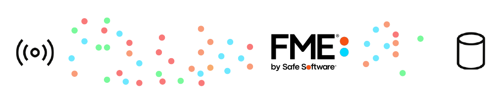
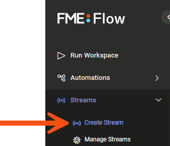
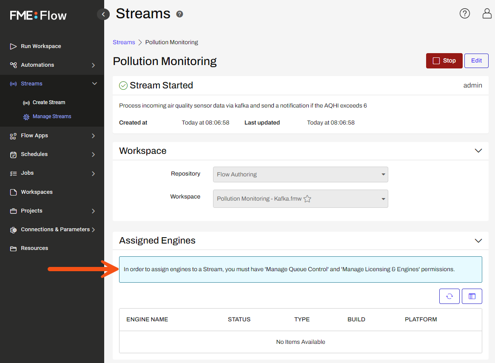
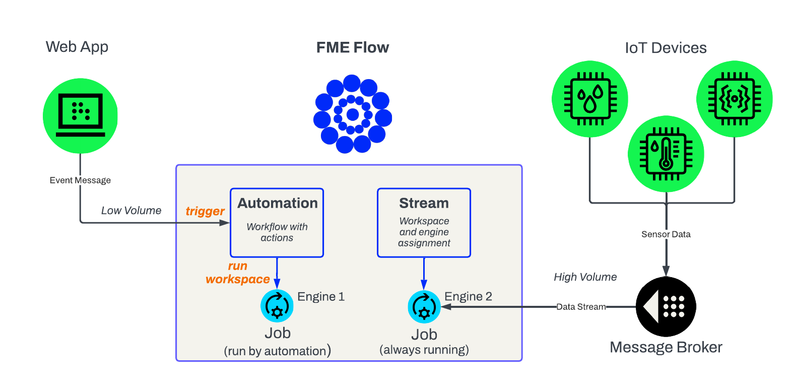

After completing this lesson, you’ll be able to:
FME Flow Streams allow a workspace to run continuously to process an unbounded stream of data. This is known as stream processing. Stream processing is a term that groups together the collection, integration, and analysis of unbounded data. Unbounded data does not have a definitive start and end like a file does - it is infinite. It is typically characterized by small records arriving at extremely high velocity.
The Internet of Things (IoT) often produces data streams. Examples include: GPS sensors, weather feeds, and Automatic Meter Readings (AMR). These devices typically publish their data to an intermediary application, like a message broker or queue, that an FME workspace can connect to.
FME Flow Streams allow organizations to continuously deliver insights on unbounded data.

An FME Flow Stream runs a single FME workspace indefinitely. The workspace should contain a transformer that can run in ‘Stream Mode’, such as the KafkaConnector, or other connector that will cause the workspace to run indefinitely until it is stopped, such as a WebSocket connector.
Since a data stream is unbounded, a TimeWindower transformer is used to create time-based ‘Windows’, or groups, of data that can be processed downstream in the workspace, as illustrated below.
FME has transformers with Stream Mode to connect to different message queues and brokers, including the KafkaConnector, AzureIoTConnector, MQTTConnector, and many more.
Once a suitable workspace has been authored and published to FME Flow, an FME Flow Author can create a Stream using the web user interface.

A single workspace is chosen when creating a Stream. Users in the FME Flow Authors role can create Streams, and start/stop them, but do not have permissions to assign engines. An engine is what processes a running workspace, known as a job, on FME Flow. To fully configure an FME Flow Stream, an Author needs to work with an FME Flow Administrator to ensure that at least one FME Flow engine available at all times to be dedicated to the Stream.

FME Flow Automations provide an excellent way to process real-time events, but are not well suited to process a continuous, unbounded stream of data. Data from a stream typically arrives at a very high velocity. Submitting a new translation to an FME Flow Engine each time each time a message is received from a data stream would be too much overhead.
In an FME Flow Stream, the workspace is continually running to handle the high velocity an unbounded stream requires, which can be thousands of messages per second. The engine is always in use while the Stream is running, even when there is no incoming data to process.
